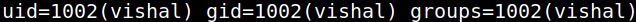
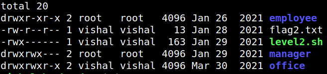

4.3.3 Connecting via SSH (Second flag)
1. Connect “vishal” user via SSH.
$ssh -p 2222 vishal@192.168.12.27
2. Get data about “vishal” user.
vishal@hacksudo:~$id
vishal@hacksudo:~$ls -l
vishal@hacksudo:~$ls -l
Output:


3. Get the second flag.
vishal@hacksudo:~$cat flag2.txt
Output